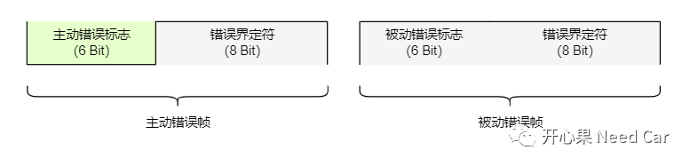
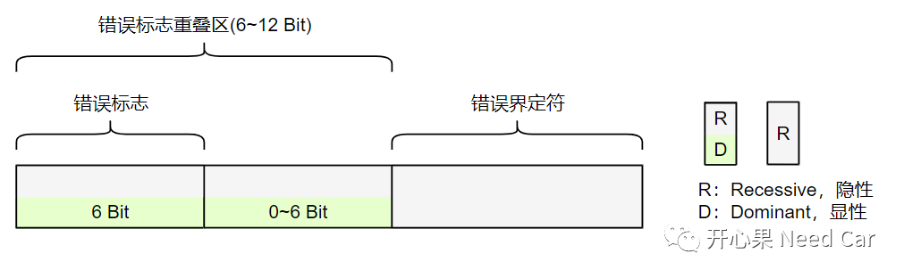
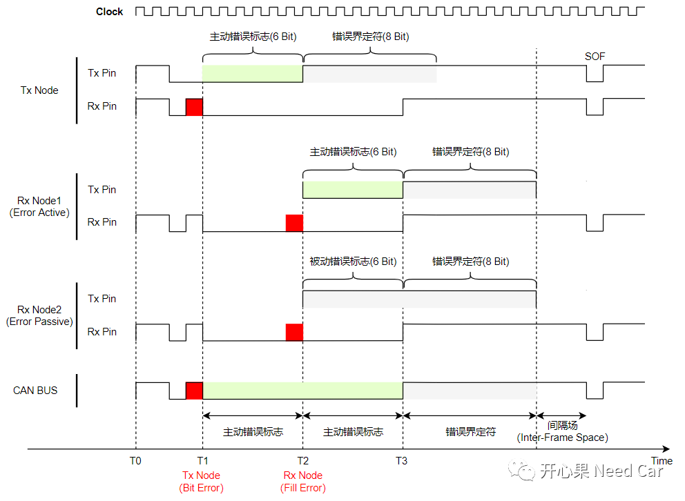

开心果 Need Car · 2022-09-09T16:37:00+08:00 · 微信原文
错误帧很难吗？答：不难。但是工程开发中，如果不清楚错误帧的产生机制，对一些问题的理解就会一知半解。比如：Busoff问题，我们知道是因为发送节点产生错误帧，TEC ＞255导致的Busoff。对于Busoff问题，可以参考前文CAN通信：Busoff问题知多少。对于错误帧，这里有几个问题，你清楚吗？
1、错误帧何时发送？
2、某一时刻，发送节点和接收节点识别到的错误类型相同吗？
1、错误帧何时发送？

主动错误帧：6个显性位（"0"）+ 8个隐性位（"1"），6个显性位是错误标志，8个隐性位是错误界定符。Active Passive节点发送主动错误帧。
被动错误帧：6个隐性位（"1"）+ 8个隐性位（"1"），6个隐性位是错误标志，8个隐性位是错误界定符。Error Passive节点发送被动错误帧。
但是，实际的CAN BUS中，几乎很难捕获完整的主动错误帧或者被动错误帧，因为一个网段内，一般有多个节点，存在错误重叠。当某个节点识别到错误时，会在错误Bit的下一个Bit发送错误帧(这是本小节的答案)，同时，网段内的其他节点也会检测到错误。总线上的错误格式如下所示：

大家应该注意到，CAN BUS上会有0~6 Bit的错误重叠区。这又如何理解呢？我们继续分析。
2、某一时刻，发送节点和接收节点识别到的错误类型相同吗？
假设：某个CAN网段内有三个节点，各节点识别错误帧的时机如下所示：

T0时刻，经过仲裁，某个节点（Tx Node）赢得CAN BUS使用权，开始发送CAN 报文。对于CAN总线的仲裁不清楚的可以参考前文CAN总线仲裁原理；
T1时刻，Tx Node发送（Tx Pin发送）一个显性位（"0"），在回采（Rx Pin接收）的时候，采集到隐性位（"1"），发送节点率先识别到位错误（Bit Error）。在错误Bit的下一Bit，发送节点发送主动错误帧（假设：发送节点处于Error Active）。此时，接收节点（Rx Node）并不认为有错误（接收节点并不知道发送节点发送的Bit是显性或者隐性）；
T2时刻，接收节点（Rx Node1和Rx Node2）识别到填充错误（Fill Error），Rx Node1发送主动错误帧（假设：Rx Node1处于Error Active），Rx Node2发送被动错误帧（假设：Rx Node2处于Error Passive）。由于“线与”规则，T2~T3时刻，6个显性Bit覆盖6个隐性Bit，在总线上可以看到6个显性位。之后，Rx Node1和Rx Node2发送错误界定符。
之后，Tx Node发送帧间隔（Inter-Frame Space）。
如上，也可以看出，某一时刻，发送节点和接收节点未必均识别到错误。发送节点和接收节点识别到的错误也未必相同。
提示：CAN报文的填充规则，每5个相同的Bit，插入一个反向Bit。
往期精彩回顾